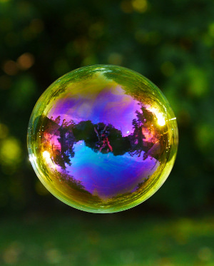
Ⓒ zacktionman
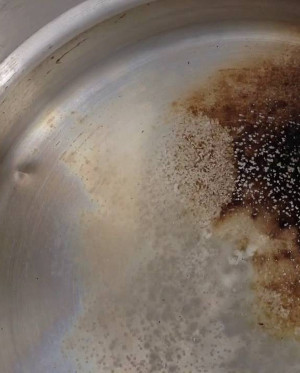
Ⓒ BigEmann
Ⓒ Columbia Chemical
Birth of this Research Project
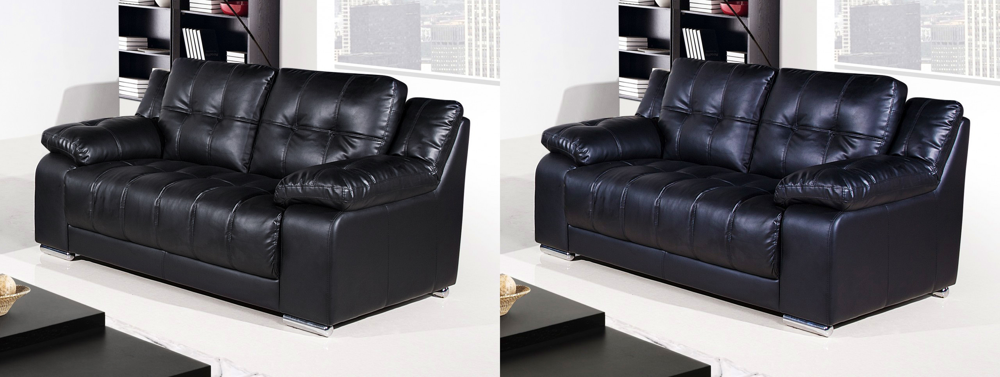
Classical microfacets
Iridescent microfacets
- It all started with a blog post
- We wanted to achieve it real-time
- First guess: "should be easy"
- Took us 8 months ...
Goniochromism
Ⓒ DipYourCar
Thin-Film Reflectance
Thin-Film Interference: Using Phase
$\eta_{1}$
$\eta_{2}$
$\vec{\eta}_{3}$
$\mathcal{D}$
$\mathcal{D}$
$\mathcal{D}$
$\mathcal{D}$ is called the Optical Path Difference
Thin-Film Interference : Airy Summation
$\eta_{1}$
$\eta_{2}$
$\vec{\eta}_{3}$
outgoing reflectance $ R = |\vec{r}|^2$
with $\vec{r} = \color{red}{\vec{r}_{12}} + \color{blue}{t_{12}} \color{green}{\vec{r}_{23}e^{i \Delta\phi}} \color{orange}{t_{21}} + \cdots$
$$\vec{r} = \color{red}{\vec{r}_{12}} + \color{blue}{t_{12}} \color{green}{\dfrac{\vec{r}_{23}e^{i \Delta\phi}}{1 - \vec{r}_{21}\vec{r}_{23}e^{i \Delta\phi}}} \color{orange}{t_{21}}$$
Analytical form: Airy summation
Naive Implementation
| 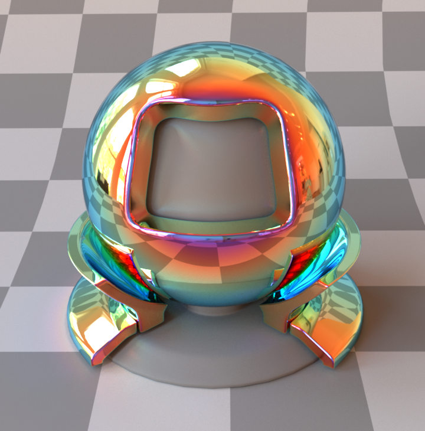 | |
| RGB renderer - Naive implementation |
|
Comparison with Spectral Renderer
|
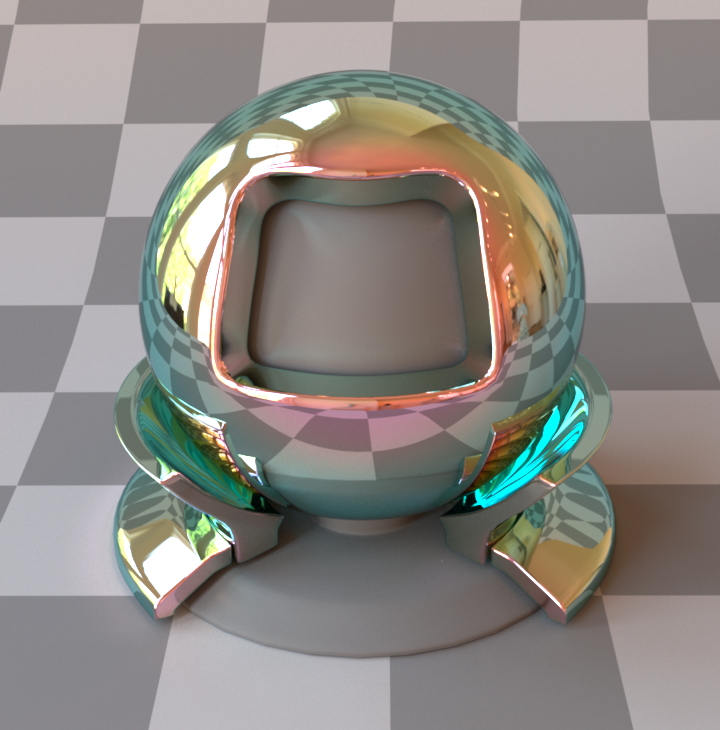 |
| 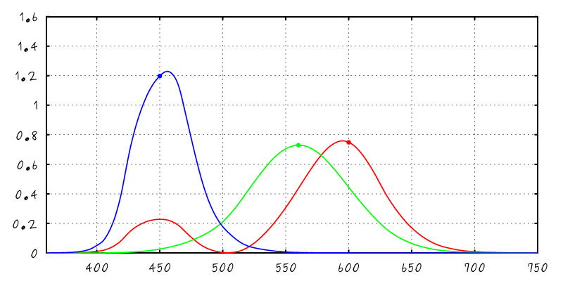 |
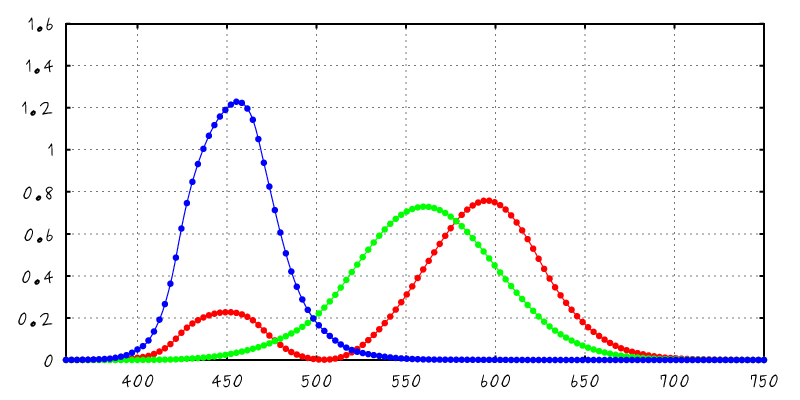 |
| RGB renderer - Naive implementation |
128 spectral samples - Naive implementation |
Issue: Spectral Aliasing
- Using Naive RGB rendering does spectral aliasing
- Affect goniochromatic materials
- Can be solved using spectral rendering
- Spectral rendering is not an option for video-games
- Our solution: spectral antialiasing
- Account for spectral integration inside the model
- Required a novel view on Airy's summation
Spectral Integration with Sensor Sensitivity
$$\int$$
$$\times$$
$$\times$$
$$\mbox{d}\lambda$$
| 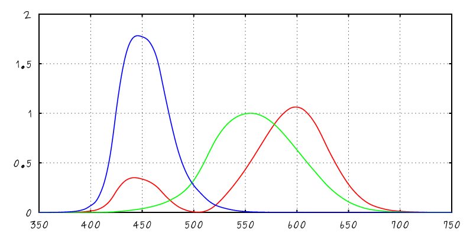 |
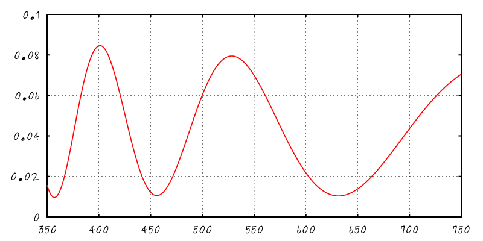 |
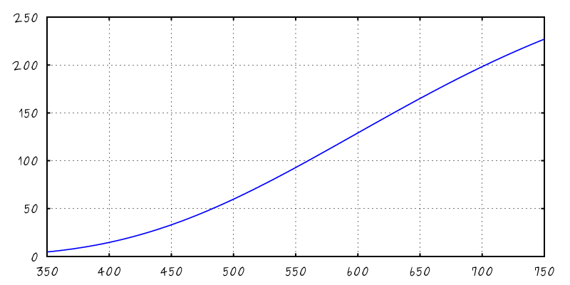 |
| XYZ Color Matching Curves |
Spectral BRDF |
Illuminant A |
Our Solution: Pre-Integration
- Under approximations
- Illuminant constant per sensitivity function
- Material properties (IORs) constant as well
- We can approximate the spectral integral in closed-form
$$R \! = \! \int \hspace{500px} \mbox{d}\lambda$$
| 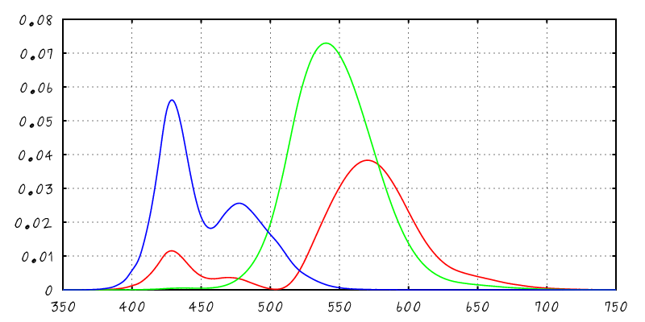 |
| XYZ times Reflectance |
Airy Summation Reordered
- Start from Airy summation
$$
\vec{r} = \color{red}{\vec{r}_{12}} + \color{blue}{t_{12}} \color{green}{\vec{r}_{23}e^{i \Delta\phi}} \color{orange}{t_{21}} + \cdots
$$
- Work on reflectivity and expand summation
$$R = |\vec{r}|^2 = C_0 + \sum_{m = 1}^{+\infty} C_m \color{blue}{\underbrace{\color{black}{\cos(m \Phi)}}}$$
equal phase difference
Airy Summation Reordered
Airy Summation Reordered
Airy Summation Reordered
Change of Variable
- Express $R$ with respect to light frequency and not wavelength
|
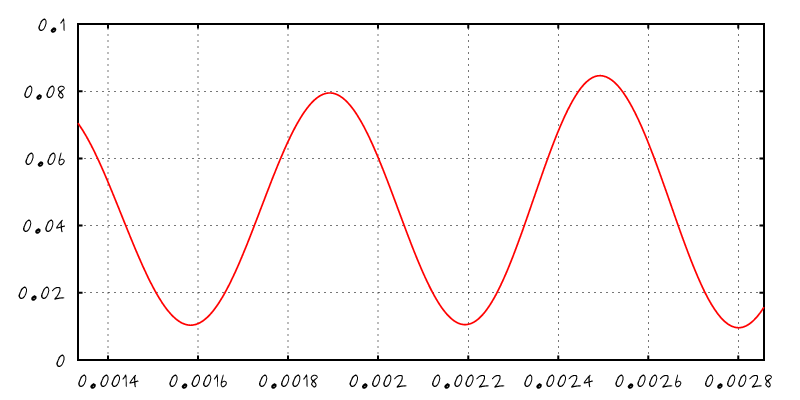 |
| $R(\lambda)$ |
$R(\mu)$ with $\mu \sim \frac{1}{\lambda}$ |
Fourier Transform of the Reflectance
- Has discrete form with respect to light frequency
|
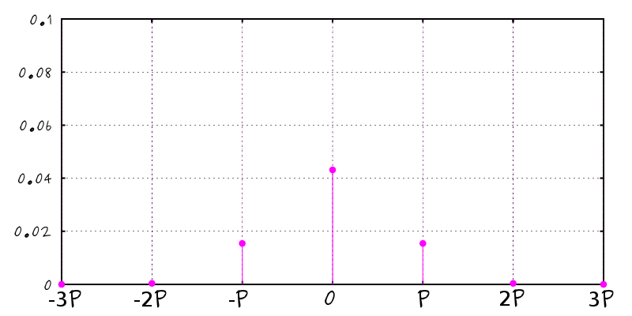 |
| $R(\mu)$ with $\mu \sim \frac{1}{\lambda}$ |
$\mathcal{F}\left[R\right]$ |
Integration in Fourier's Space
$$R_j = \int \hat{R}(\mu) \, \overline{\hat{S}_j(\mu)} \, \mbox{d}\mu$$
|
|
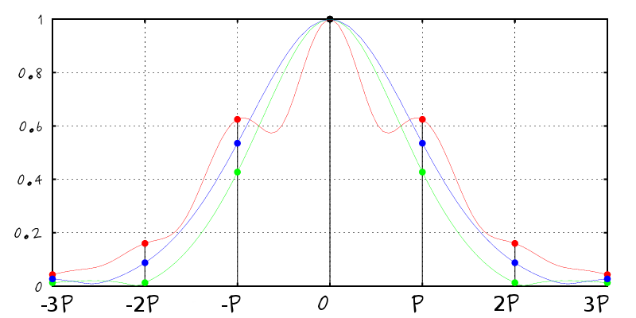 |
| Continuous integral |
|
Discrete sum |
Integration in Fourier's Space
- Evaluation of the sensitivity's Fourier Transform
- Can be precomputed as a RGB texture
- Can be approximated using 4 Gaussians
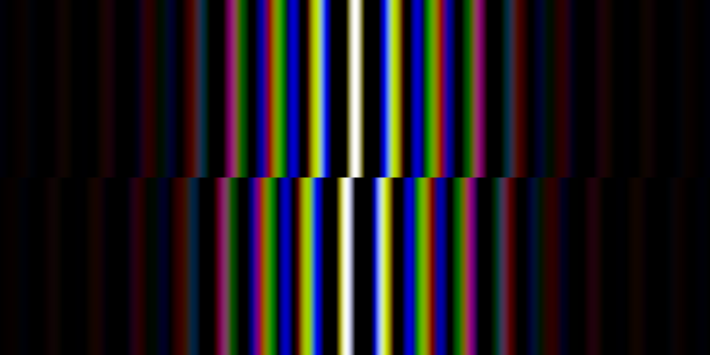
Real and imaginary table
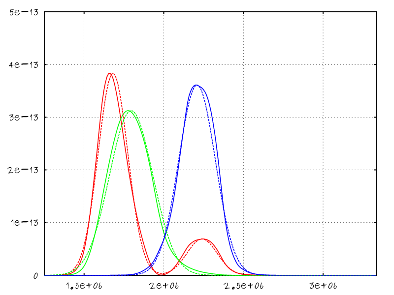
Fitting sensitivity functions with Gaussians
Integration in Microfacet Models
$$\rho = \frac{D(\mathbf{h}) \; G(\pmb{\omega}_i, \pmb{\omega}_o) \; F(\mathbf{h} \cdot \pmb{\omega}_i)}{4 \; (\pmb{\omega}_i \cdot \mathbf{n}) \; (\pmb{\omega}_o \cdot \mathbf{n})} $$
$$\rho = \frac{D(\mathbf{h}) \; G(\pmb{\omega}_i, \pmb{\omega}_o) \color{red}{R_i(\mathbf{h} \cdot \pmb{\omega}_i)}}{4 \; (\pmb{\omega}_i \cdot \mathbf{n}) \; (\pmb{\omega}_o \cdot \mathbf{n})} $$
Real-Time Rendering Constraints
- Approximation for IBL and Area-Lights
- Decorrelate $R_i$ from the IBL/AL pre-integration
- Evaluate $R_i$ using the mirror direction
- Oversaturate colors for rough materials
Results: Matlab Validation
- Dielectric film over a dielectric base
- Truncating the infinite sum
- Using up to 3 terms in the series
- In practice: still good up to 2
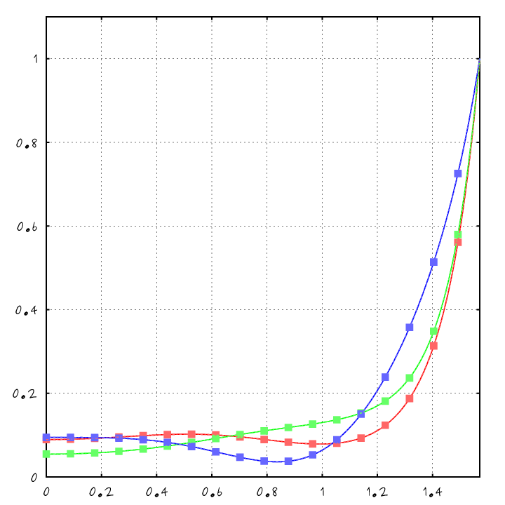
XYZ Reflectance w/r to Elevation
Results: Matlab Validation
- Dielectric film over a dielectric base
- Truncating the infinite sum
- Using up to 3 Optical Path Difference ($\mathcal{D}$)
- In practice: still good up to 2 $\mathcal{D}$
- Also visible in Chromaticity Space
- Display curves w/r $[x,y] = \left[\frac{X}{X+Y+Z}, \frac{Y}{X+Y+Z}\right]$
- Our model faithfully reproduce the GT
- Comparison with Naive RGB
- Fails to correctly reproduce color
- Often goes out of gamut
Results: Offline Validation
- Rendering in Mitsuba
- Conductor base with $\eta = 1.9$ and $\kappa = 1.5$
- Film of thickness $h = 550 \mbox{nm}$
Results: Real-Time Validation
- Rendering in BRDF Explorer, Gratin and Unity
- GLSL implementation provided in supp. mat.
- Using the Gaussian approximation of XYZ
- Spatial Variations
- All parameters can be mapped to textures
- In practice: better vary only the thickness
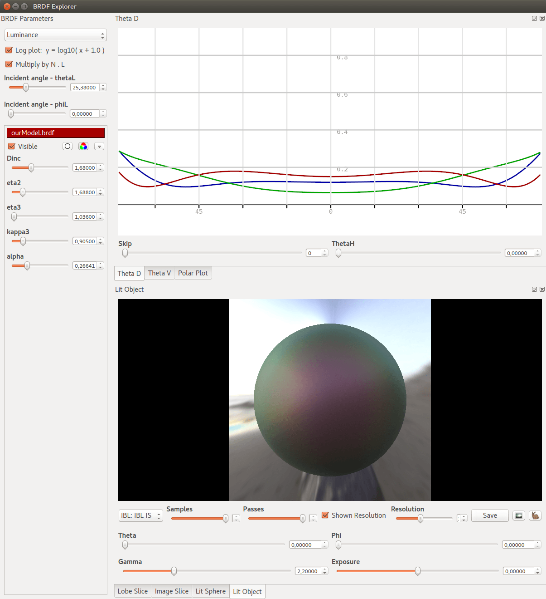
Results: Chair
- Following Maxwell Render team's blog post
- Start from a classical microfacet model and add iridescence
- Similar appearance with same inputs
- Produce a subtle but convincing effect
- Rendered in Mitsuba
Results: Robot Bust
- Illustrate some possible appearances
- Increase thickness gradually
- Add texture to modulate thickness
- Rendered in Mitsuba
Results: Beetle
- Replicating special effect car paint
Limitations
- Varying Index of Refraction (IOR)
- Using measured data
- Fail to correctly replicated color for highly varying IORs
Glass base
Mercury base
Copper base
Summary
- A extension to microfacet models
- Adding interference from thin-films
- Enable a richer set of appearances
- Our contributions
- Spectral antialiasing from modified Airy summation
- Compatible with RGB real-time constraints
- Compatible with LOD rendering (see paper!)
Thank you for your attention
| 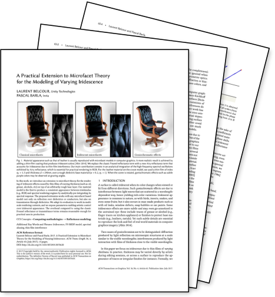 |
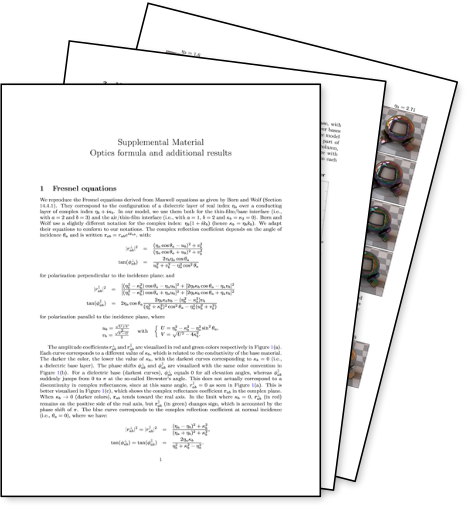 |
|
| paper |
supp. mat. |
code |
available at labs.unity.com